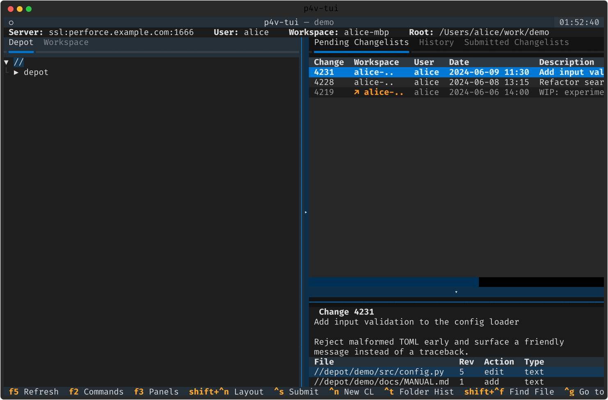
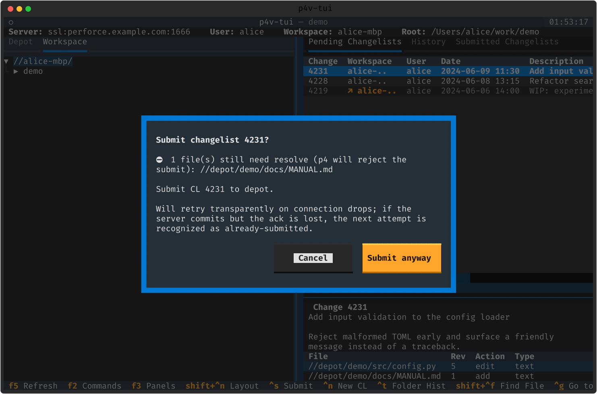
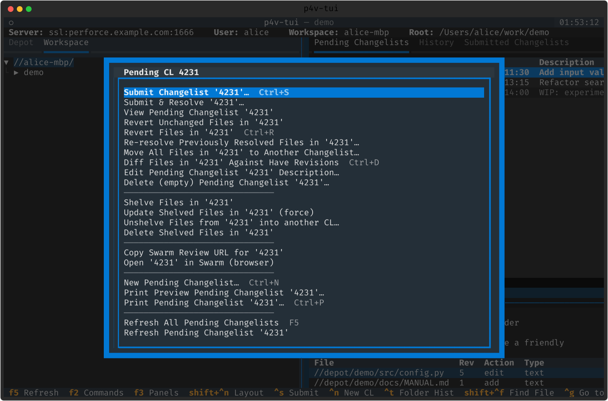
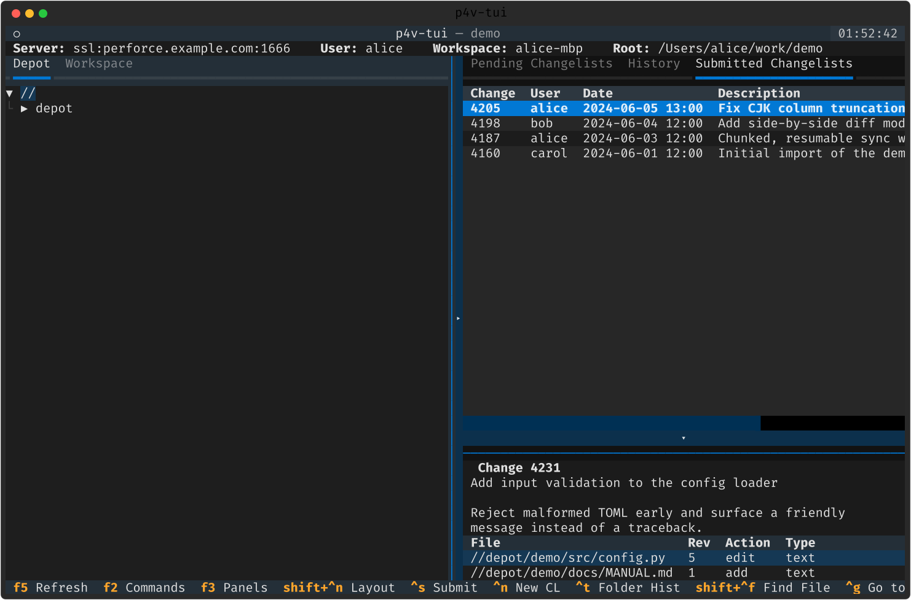

체인지리스트 · 서브밋
미제출·제출된 체인지리스트를 다룹니다. 크로스 워크스페이스, 회복형 서브밋, 서브밋 가드, 셸브까지.
크로스 워크스페이스 Pending ➕
Pending 표는 현재 사용자의 모든 워크스페이스에 걸친 미제출 CL 을 모읍니다 (changes -s pending -u <me>). 로컬 CL 이 먼저, 다른 워크스페이스의 것은 흐리게 + 노란 ↗ 워크스페이스명 마커로 이어집니다. 원격 행은 Submit/Revert/Shelve 가 메뉴에서 빠지고, Ctrl+S 는 토스트로 거절하며, Enter 는 편집 대신 읽기전용 describe 뷰어를 엽니다.

서브밋 · 가드 · 회복력
Ctrl+S(또는 상세 패널의 Submit)로 서브밋합니다. 서브밋 전에는 사전 가드가 미해결 파일·초대형 blob·빈 CL 을 먼저 경고해 되돌아갈 틈을 줍니다. 실제 서브밋은 드롭에도 투명 재시도하고, 서버는 커밋했는데 응답만 유실돼도 다음 시도가 "이미 서브밋됨"으로 인식합니다(lost-ack 멱등성).

CL 관리 · 셸브
- 새 Pending CL — Ctrl+N. 설명을 입력하면 기본 CL 이 번호 CL 로 승격.
- 설명 편집 · 파일 토글 — 상세 패널의 TextArea + SelectionList 체크박스.
- 파일 이동 — 맥락 메뉴로 기본/기존/새 CL 사이 이동.
- 셸브 사이클 — Shelve/Unshelve/Update/Delete + 부분 셸브(파일 선택 피커) ➕.
- Submit & Resolve · 재리졸브 · 빈 CL 삭제 · Swarm 리뷰 URL 복사 ➕.

Submitted · Jira
Submitted 표는 제출된 CL(Change · User · Date · Description)을 보여주고, Enter 로 읽기전용 describe -s 뷰어를 엽니다. 맥락 메뉴로 설명 편집(admin), 파일 리비전 받기, 이전 리비전과 디프(Ctrl+D), 라벨 태그, 트리에서 파일 보기, CL 통째 되돌리기(undo @CL) 등.
Jira ➕ — [jira] 에 base_url 을 두면, 서브밋 시 CL 설명에서 찾은 이슈 키의 브라우즈 URL 을 제안합니다(스마트커밋 방식 — 라이브 Jira API 호출은 없습니다).
